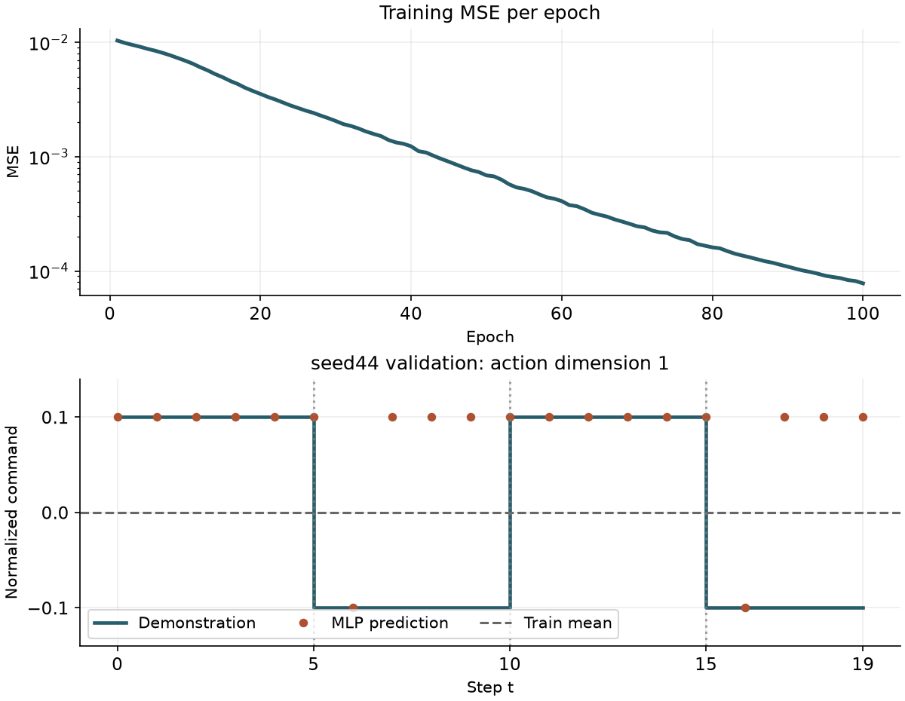

第八篇只用训练轨迹拟合状态统计。本篇把这份冻结统计接到一个小模型上。给定当前关节位置和速度，模型预测同一时刻演示里的动作。这个监督学习问题就是行为克隆的起点。
本次在 CPU 上训练了 100 轮，共 500 次优化器更新。固定的验证轨迹上，MLP 的平均绝对误差从 0.10000 降到 0.08001，均方误差却从 0.01000 升到 0.01600。看完逐步预测，就能看到两个指标为何给出了不同判断。
把当前状态配给当前动作
第七篇给出了按来源固定的划分。每条轨迹有 21 份观测和 20 个动作。t 从 0 开始，观测 t=0…19 分别配 actions[0…19]，t=20 是最后一次动作后的状态。直接遍历动作索引可以给每个 (trajectory_id, t) 恰好一次训练或评估机会。
| 集合 | 轨迹来源 | 状态—动作对 |
|---|---|---|
| 训练 | seed42、seed43 | 40 |
| 验证 | seed44 | 20 |
从环境 0 取出当前 qpos[t] 和 qvel[t]，分别用第八篇冻结的均值和尺度标准化。每项各 9 维，按位置在前、速度在后的顺序拼接。标签来自原始动作数组的第 1 维，索引为 0，量纲仍是归一化控制指令。轨迹 ID 和 t 随结果保存，供定位误差。输入张量只包含这 18 个状态数值。
n = len(actions)
x = torch.cat([
normalizer.transform("qpos", qpos[:n, 0, :]),
normalizer.transform("qvel", qvel[:n, 0, :]),
], dim=1) # [N, 18]
y = torch.from_numpy(actions[:, :1].copy()) # [N, 1]
三条轨迹都每五步切换一次第 1 维的符号，指令在 +0.1 与 −0.1 之间交替。实测动作第 2–7 维恒为 0，第 8 维恒为 1。本篇聚焦有变化的第 1 维，按这一维计算误差，便于观察换向时的预测。
用一个常数和一个小模型做对照
均值基线从 40 个训练标签计算平均值。正负指令各占一半，算出的常数是 0，对每个验证状态都给出这个预测。
MLP 有两层各 32 单元的隐藏层，激活函数为 ReLU。最后一层输出一个标量，先取 tanh 再乘 0.1，映射到本例的演示幅度。标签和预测都保持为 [B, 1]，MSELoss 对逐样本的平方误差取平均。可复现配置和曲线数据随实验提供。PyTorch MSELoss · PyTorch Adam · 运行配置
network = nn.Sequential(
nn.Linear(18, 32), nn.ReLU(),
nn.Linear(32, 32), nn.ReLU(),
nn.Linear(32, 1),
)
prediction = 0.1 * torch.tanh(network(batch_x))
loss = nn.MSELoss()(prediction, batch_y)
使用 CPU、随机种子 2027、批大小 8 和 Adam 学习率 0.001。每轮按固定随机序列打乱 40 个样本，共 5 个批次，100 轮正好是 500 次更新。每轮训练 MSE 按样本汇总，使用各批更新前算出的损失。第 1 轮约为 0.0103564，第 100 轮约为 0.0000779747。固定轮数结束后，用最终权重评估 seed44。训练曲线数据 · 数值权重
查看验证误差和换向位置
下表的两组指标使用 seed44 的同一批 20 个动作。MAE 对绝对误差取平均。MSE 先平方再平均，对较大的误差更敏感，RMSE 是 MSE 的平方根。完整评估指标
| 方法 | MSE | RMSE | MAE |
|---|---|---|---|
| 训练均值基线 | 0.010000 | 0.100000 | 0.100000 |
| MLP | 0.015999 | 0.126487 | 0.080007 |

| 换向 t | 真实指令 | MLP 预测 | MLP 绝对误差 | 均值基线绝对误差 |
|---|---|---|---|---|
| 5 | −0.100 | +0.100 | 0.200 | 0.100 |
| 10 | +0.100 | +0.100 | 0.000 | 0.100 |
| 15 | −0.100 | +0.100 | 0.200 | 0.100 |
MLP 在 20 步中有 12 步的绝对误差小于 0.001，另外 8 步的误差接近 0.2。接近零的误差拉低了 MAE，反向满幅的预测在平方后贡献约 0.04，把 MSE 推高到了均值基线之上。换向处出现明显误差，其他时刻也有误判。逐步结果保留了这些细节。逐步预测 CSV · 数值预测 NPZ
从保存的权重复现评估
解压公开包，用兼容的 CPU Python 环境在解压目录运行。实测使用 Python 3.11.9、PyTorch 2.14.1+cpu 和 NumPy 2.4.6。评估脚本用 eval() 和 inference_mode() 读取最终数值权重，输出到一个新目录。
python -B evaluate_bc.py --input-dir input --run-dir run --output-dir reproduced-evaluation
独立验收覆盖全部 60 对状态和动作、首末训练批次、验证末批的 4 个样本、参数变化和权重重载。预测文件的指标也单独重算。公开 ZIP 在新目录解压后实跑了上述命令，预测数组、CSV 和指标均与原结果一致。权重和预测都是数值 NPZ，可用 np.load(..., allow_pickle=False) 读取。源数据校验
三条轨迹共享相同的五步换向脚本，验证轨迹只有 20 个动作。本次结果衡量这个脚本下的离线拟合误差。模型输入为当前位置和速度，脚本的换向相位未显式提供，现有数据也不足以定位误判的唯一原因。实际控制时的误差积累和闭环表现需要单独实验。